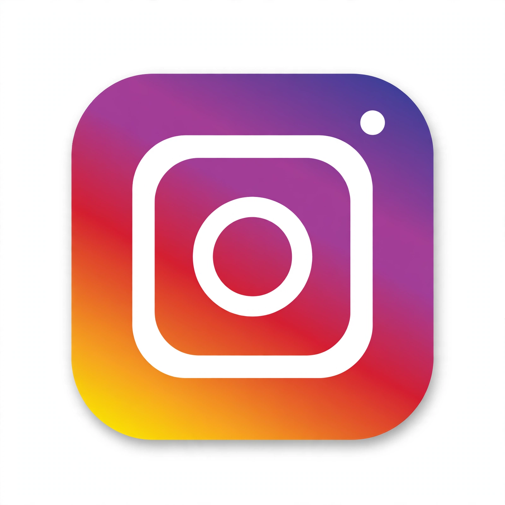

 | |
| Type of site | Photo and video sharing social networking service |
| Launched | October 6, 2010 |
| Headquarters | Menlo Park, California, United States |
| Founders | Kevin Systrom and Mike Krieger |
| Owner | Meta Platforms |
| URL | instagram.com |
| Registration | Required |
Instagram is a photo and short-video sharing social networking service owned by Meta Platforms. Created by Kevin Systrom and Mike Krieger and launched on iOS in October 2010, it was acquired by Facebook in 2012 for about US$1 billion in cash and stock, as widely reported.
Users post photos and videos to a feed, add filters and captions, publish disappearing Stories, and since 2020 post short Reels. The recreated service is at instagram.com, and Meta's text app Threads is closely linked to it.
Contents
History
Instagram grew rapidly after its Android release in 2012, reached very large user numbers in the following decade, and progressively added video, messaging (Direct), Stories copied in spirit from Snapchat, shopping features and Reels in response to TikTok.
Features
Core surfaces are the home feed, Explore, Reels, Stories, profiles and Direct messages. Accounts can be private or public, and businesses and creators get analytics and advertising tools.
Criticism
Instagram has been criticised especially over effects on teenagers' body image and mental health, algorithmic ranking, influencer culture and data practices.
See also
Links in the article body and infobox point to related articles and to the site's own homepage, recreated elsewhere in this web.
References
This article is a recreation from memory for the muse-webcrawl experiment. Factual statements are paraphrased; exact citations, page statistics and some dates are recorded as uncertain in the project ledger, not on this page.
External links
Official website — linked from this page to its recreated homepage in this web.